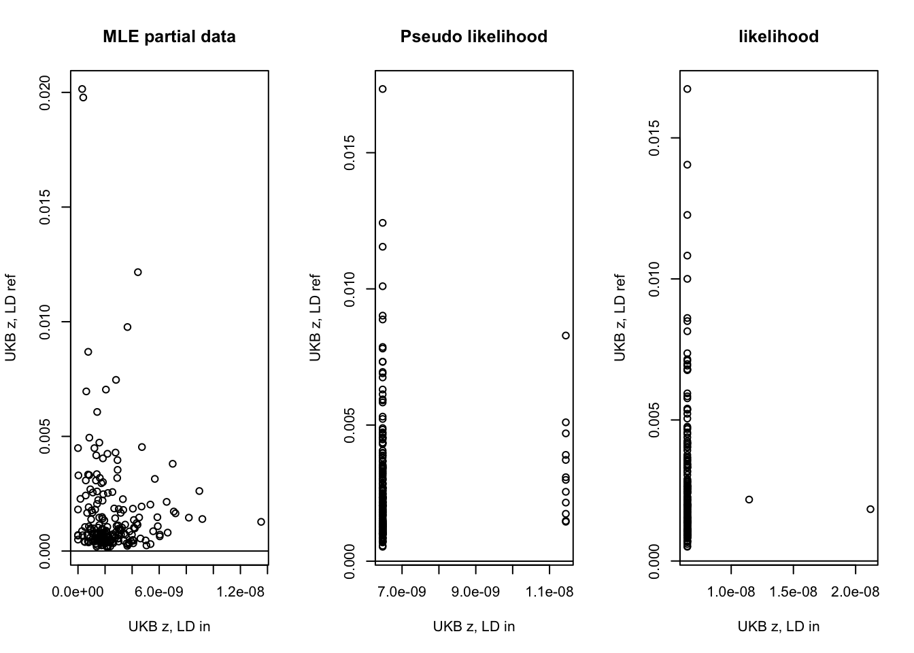
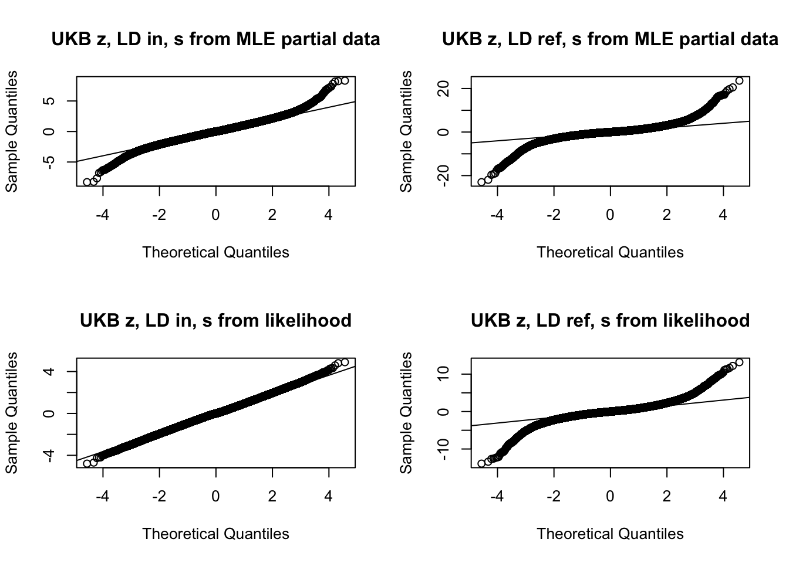
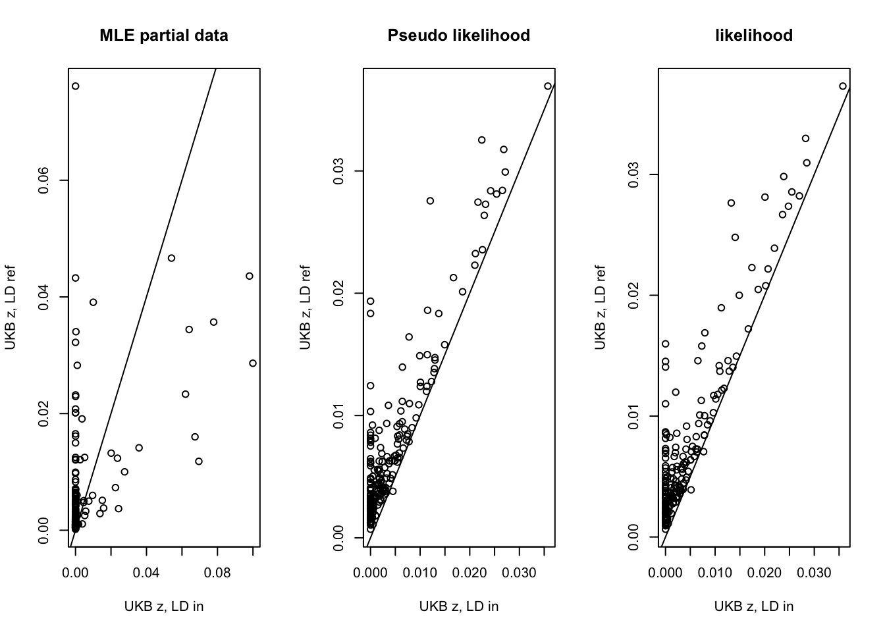
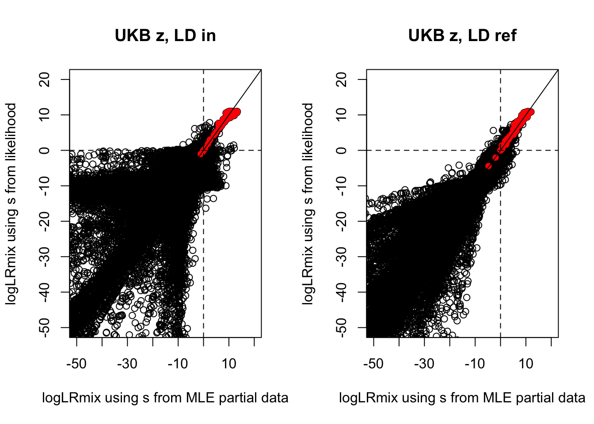

SuSiE RSS Diagnostic using UKB (simulation without signal)
Yuxin Zou
3/4/2021
Last updated: 2021-03-05
Checks: 7 0
Knit directory: susierss_diagnostic/
This reproducible R Markdown analysis was created with workflowr (version 1.6.2). The Checks tab describes the reproducibility checks that were applied when the results were created. The Past versions tab lists the development history.
Great! Since the R Markdown file has been committed to the Git repository, you know the exact version of the code that produced these results.
Great job! The global environment was empty. Objects defined in the global environment can affect the analysis in your R Markdown file in unknown ways. For reproduciblity it’s best to always run the code in an empty environment.
The command set.seed(20201222) was run prior to running the code in the R Markdown file. Setting a seed ensures that any results that rely on randomness, e.g. subsampling or permutations, are reproducible.
Great job! Recording the operating system, R version, and package versions is critical for reproducibility.
Nice! There were no cached chunks for this analysis, so you can be confident that you successfully produced the results during this run.
Great job! Using relative paths to the files within your workflowr project makes it easier to run your code on other machines.
Great! You are using Git for version control. Tracking code development and connecting the code version to the results is critical for reproducibility.
The results in this page were generated with repository version 2f72879. See the Past versions tab to see a history of the changes made to the R Markdown and HTML files.
Note that you need to be careful to ensure that all relevant files for the analysis have been committed to Git prior to generating the results (you can use wflow_publish or wflow_git_commit). workflowr only checks the R Markdown file, but you know if there are other scripts or data files that it depends on. Below is the status of the Git repository when the results were generated:
Ignored files:
Ignored: .Rhistory
Ignored: .Rproj.user/
Ignored: output/.DS_Store
Untracked files:
Untracked: output/simulation_null_CLM_post.rds
Unstaged changes:
Modified: analysis/diagnostic_lr.Rmd
Note that any generated files, e.g. HTML, png, CSS, etc., are not included in this status report because it is ok for generated content to have uncommitted changes.
These are the previous versions of the repository in which changes were made to the R Markdown (analysis/diagnostic_ukb_lr_null.Rmd) and HTML (docs/diagnostic_ukb_lr_null.html) files. If you’ve configured a remote Git repository (see ?wflow_git_remote), click on the hyperlinks in the table below to view the files as they were in that past version.
| File | Version | Author | Date | Message |
|---|---|---|---|---|
| Rmd | 2f72879 | zouyuxin | 2021-03-05 | wflow_publish(“analysis/diagnostic_ukb_lr_null.Rmd”) |
There are two goals in diagnostic:
Check the consistency between z scores and LD matrix using \(s^2\);
Detect allele switch issue (flipped sign in z score) using conditional distribution.
In diagnostic, we assume the following model, \[ \hat{z} \sim N(Rz, \sigma^2 R + s^2 I), \sigma^2 + s^2 \leq 1. \] Let \(R = U D U^\intercal\) be eigen-decomposition of \(R\), \(D\) has \(p_1\) positive diagonal elements, \(U = [U_1 \ U_2]\), \(U_1\) is a \(p\) by \(p_1\) matrix, \(U_2\) is a \(p\) by \(p_2=p-p_1\) matrix. We transform \(\hat{z}\) into null space of \(R\) by multiplying \(U_2^\intercal\) \[ U_2^T \hat{z} \sim N(0, s^2 I_{p_2}). \] Therefore, the MLE for \(s^2\) using partial data is \(\frac{1}{p_2} \hat{z}^\intercal U_2 U_2^\intercal \hat{z}\). We estimate \(\sigma^2\) by \(1-s^2\).
Under the null, the posterior distribution of \(\hat{z}_j | \hat{z}_{-j}\) is: \[ \hat{z}_j | \hat{z}_{-j} \sim N(-\frac{1}{\Omega_{jj}} \Omega_{j,-j} \hat{z}_{-j},1/\Omega_{jj}), \Omega = (\sigma^2 R + s^2 I)^{-1}. \]
To check whether there is an allele switch issue, we test the hypothesis \(H_0:\) the sign of \(\hat{z}_j\) is correct, vs \(H_1:\) the sign of \(\hat{z}_j\) is flipped. The likelihood ratio is \[ LR = \frac{p(-\hat{z}_j | \hat{z}_{-j})}{p(\hat{z}_j | \hat{z}_{-j})} \]
From the simulation, the standardized differences between observed z score and the conditional mean is longer-tailed than N(0,1). We use a mixture of normals to model the heavier tail empirically. We model the conditional distribution as \[
\hat{z}_j | \hat{z}_{-j} \sim \sum_{k=1}^{K} \pi_k N(-\frac{1}{\Omega_{jj}} \Omega_{j,-j} \hat{z}_{-j},\frac{\sigma_k^2}{\Omega_{jj}}).
\] The \(\sigma_k\) is a fixed dense grid, the minimum value is \(0.8\), the maximum value is \(2\sqrt{max(\text{standardized difference}^2)}\). We estimate \(\pi_k\) using mixsqp. The likelihood ratio test is based on the mixture distribution.
Simulation Setting
In the following simulation, we extract 200 regions from UKB. We sample 10,000 UKB individuals to simulate z scores and generate in sample LD. We simulate data without signal. We sample 1,000 UKB individuals as reference panel. There are 1000 SNPs in each region.
library(tibble)
library(dplyr)
out = readRDS('data/susierss_diagnostic_ukb_query.rds')
out = as_tibble(out)
out_nosignal_ukb_in = out %>% filter(simulate.n_signal == 0, flip_z.flip == FALSE,
diagnostic.z_type == 'ukb', diagnostic.ld_type == 'sample')
out_nosignal_ukb_ref = out %>% filter(simulate.n_signal == 0, flip_z.flip == FALSE,
diagnostic.z_type == 'ukb', diagnostic.ld_type == 'ref')
out_nosignal_ukb_flip_in = out %>% filter(simulate.n_signal == 0, flip_z.flip == TRUE, flip_z.flip_pos == 'null',
diagnostic.z_type == 'ukb', diagnostic.ld_type == 'sample')
out_nosignal_ukb_flip_ref = out %>% filter(simulate.n_signal == 0, flip_z.flip == TRUE, flip_z.flip_pos == 'null',
diagnostic.z_type == 'ukb', diagnostic.ld_type == 'ref')Simulation 1.1: no signal, no flip (z = 0)
Check \(s^2\)
We compare the \(s^2\) using different LD matrix.
out_nosignal_ukb_in_s2 = apply(out_nosignal_ukb_in, 1, function(x) x$diagnostic.res1_simple$s2)
out_nosignal_ukb_ref_s2 = apply(out_nosignal_ukb_ref, 1, function(x) x$diagnostic.res1_simple$s2)
plot(out_nosignal_ukb_in_s2, out_nosignal_ukb_ref_s2, xlab = 'UKB z, in sample LD', ylab='UKB z, UKB ref LD')
abline(0,1)
The estimated \(s^2\) is larger when the LD matrix is from reference panel.
Check conditional mean and Likelihood
z = unlist(lapply(out_nosignal_ukb_in$diagnostic.res1_simple, function(x) x$post$z))
out_nosignal_ukb_in_mean = unlist(lapply(out_nosignal_ukb_in$diagnostic.res1_simple, function(x) x$post$postmean))
out_nosignal_ukb_in_z = unlist(lapply(out_nosignal_ukb_in$diagnostic.res1_simple, function(x) x$post$post_z))
out_nosignal_ukb_in_l0 = unlist(lapply(out_nosignal_ukb_in$diagnostic.res1_simple, function(x) x$post$logl0))
out_nosignal_ukb_in_l1 = unlist(lapply(out_nosignal_ukb_in$diagnostic.res1_simple, function(x) x$post$logl1))
out_nosignal_ukb_in_lr = unlist(lapply(out_nosignal_ukb_in$diagnostic.res1_simple, function(x) x$post$logLR))
out_nosignal_ukb_in_l0mix = unlist(lapply(out_nosignal_ukb_in$diagnostic.res1_simple, function(x) x$post$logl0mix))
out_nosignal_ukb_in_l1mix = unlist(lapply(out_nosignal_ukb_in$diagnostic.res1_simple, function(x) x$post$logl1mix))
out_nosignal_ukb_in_lrmix = unlist(lapply(out_nosignal_ukb_in$diagnostic.res1_simple, function(x) x$post$logLRmix))
out_nosignal_ukb_in_l1mix[is.infinite(out_nosignal_ukb_in_l1mix)] = -1500
out_nosignal_ukb_in_lrmix[is.infinite(out_nosignal_ukb_in_lrmix)] = -1500
out_nosignal_ukb_ref_mean = unlist(lapply(out_nosignal_ukb_ref$diagnostic.res1_simple, function(x) x$post$postmean))
out_nosignal_ukb_ref_z = unlist(lapply(out_nosignal_ukb_ref$diagnostic.res1_simple, function(x) x$post$post_z))
out_nosignal_ukb_ref_l0 = unlist(lapply(out_nosignal_ukb_ref$diagnostic.res1_simple, function(x) x$post$logl0))
out_nosignal_ukb_ref_l1 = unlist(lapply(out_nosignal_ukb_ref$diagnostic.res1_simple, function(x) x$post$logl1))
out_nosignal_ukb_ref_lr = unlist(lapply(out_nosignal_ukb_ref$diagnostic.res1_simple, function(x) x$post$logLR))
out_nosignal_ukb_ref_l0mix = unlist(lapply(out_nosignal_ukb_ref$diagnostic.res1_simple, function(x) x$post$logl0mix))
out_nosignal_ukb_ref_l1mix = unlist(lapply(out_nosignal_ukb_ref$diagnostic.res1_simple, function(x) x$post$logl1mix))
out_nosignal_ukb_ref_lrmix = unlist(lapply(out_nosignal_ukb_ref$diagnostic.res1_simple, function(x) x$post$logLRmix))
out_nosignal_ukb_ref_l1mix[is.infinite(out_nosignal_ukb_ref_l1mix)] = -1500
out_nosignal_ukb_ref_lrmix[is.infinite(out_nosignal_ukb_ref_lrmix)] = -1500par(mfrow=c(3,2))
diff_in = z-out_nosignal_ukb_in_mean; diff_ref = z-out_nosignal_ukb_ref_mean;
ymax = ceiling(max(c(diff_in, diff_ref))); ymin = floor(min(c(diff_in, diff_ref)))
plot(diff_in, ylab='UKB z, in sample LD', main='z-conditional mean',cex=0.6, ylim = c(ymin, ymax))
plot(diff_ref, ylab='UKB z, UKB ref LD', ylim = c(ymin, ymax))
ymax = ceiling(max(c(out_nosignal_ukb_in_z, out_nosignal_ukb_ref_z))); ymin = floor(min(c(out_nosignal_ukb_in_z, out_nosignal_ukb_ref_z)))
plot(out_nosignal_ukb_in_z, ylab='UKB z, in sample LD', main='standardized difference',cex=0.6, ylim = c(ymin, ymax))
plot(out_nosignal_ukb_ref_z, ylab='UKB z, UKB ref LD', ylim = c(ymin, ymax))
qqnorm(out_nosignal_ukb_in_z, main='Standardized Difference in sample LD, UKB z')
qqline(out_nosignal_ukb_in_z)
qqnorm(out_nosignal_ukb_ref_z, main='Standardized Difference ref LD, UKB z')
qqline(out_nosignal_ukb_ref_z)
par(mfrow=c(2,2))
plot(out_nosignal_ukb_in_l0, out_nosignal_ukb_in_l1, main='UKB z, in sample LD', xlab='log likelihood under null', ylab='log likelihood under alternative',
ylim = c(2*min(out_nosignal_ukb_in_l0), max(out_nosignal_ukb_in_l1)))
abline(0,1)
plot(out_nosignal_ukb_ref_l0, out_nosignal_ukb_ref_l1, main='UKB z, UKB ref LD', xlab='log likelihood under null', ylab='log likelihood under alternative',
ylim = c(2*min(out_nosignal_ukb_ref_l0), max(out_nosignal_ukb_ref_l1)))
abline(0,1)
plot(out_nosignal_ukb_in_l0mix, out_nosignal_ukb_in_l1mix, main='Mixure model, UKB z, in sample LD', xlab='log likelihood under null', ylab='log likelihood under alternative', ylim=c(2*min(out_nosignal_ukb_in_l0mix), max(out_nosignal_ukb_in_l1mix)))
abline(0,1)
plot(out_nosignal_ukb_ref_l0mix, out_nosignal_ukb_ref_l1mix, main='Mixure model, UKB z, UKB ref LD', xlab='log likelihood under null', ylab='log likelihood under alternative', ylim = c(2*min(out_nosignal_ukb_ref_l0mix), max(out_nosignal_ukb_ref_l1mix)))
abline(0,1)
Simulation 1.2: no signal, flip one sign
Based on Simulation 1.1, we randomly flipped sign of one z score.
Check \(s^2\)
out_nosignal_ukb_flip_in_s2 = apply(out_nosignal_ukb_flip_in, 1, function(x) x$diagnostic.res1_simple$s2)
out_nosignal_ukb_flip_ref_s2 = apply(out_nosignal_ukb_flip_ref, 1, function(x) x$diagnostic.res1_simple$s2)
plot(out_nosignal_ukb_flip_in_s2, out_nosignal_ukb_flip_ref_s2, xlab = 'UKB z, in sample LD', ylab='UKB z, UKB ref LD')
abline(0,1)
Check conditional mean and Likelihood
z_flip = unlist(lapply(out_nosignal_ukb_flip_in$diagnostic.res1_simple, function(x) x$post$z))
out_nosignal_ukb_flip_in_mean = unlist(lapply(out_nosignal_ukb_flip_in$diagnostic.res1_simple, function(x) x$post$postmean))
out_nosignal_ukb_flip_in_z = unlist(lapply(out_nosignal_ukb_flip_in$diagnostic.res1_simple, function(x) x$post$post_z))
out_nosignal_ukb_flip_in_l0 = unlist(lapply(out_nosignal_ukb_flip_in$diagnostic.res1_simple, function(x) x$post$logl0))
out_nosignal_ukb_flip_in_l1 = unlist(lapply(out_nosignal_ukb_flip_in$diagnostic.res1_simple, function(x) x$post$logl1))
out_nosignal_ukb_flip_in_lr = unlist(lapply(out_nosignal_ukb_flip_in$diagnostic.res1_simple, function(x) x$post$logLR))
out_nosignal_ukb_flip_in_l0mix = unlist(lapply(out_nosignal_ukb_flip_in$diagnostic.res1_simple, function(x) x$post$logl0mix))
out_nosignal_ukb_flip_in_l1mix = unlist(lapply(out_nosignal_ukb_flip_in$diagnostic.res1_simple, function(x) x$post$logl1mix))
out_nosignal_ukb_flip_in_lrmix = unlist(lapply(out_nosignal_ukb_flip_in$diagnostic.res1_simple, function(x) x$post$logLRmix))
out_nosignal_ukb_flip_in_l1mix[is.infinite(out_nosignal_ukb_flip_in_l1mix)] = -1500
out_nosignal_ukb_flip_in_lrmix[is.infinite(out_nosignal_ukb_flip_in_lrmix)] = -1500
out_nosignal_ukb_flip_ref_mean = unlist(lapply(out_nosignal_ukb_flip_ref$diagnostic.res1_simple, function(x) x$post$postmean))
out_nosignal_ukb_flip_ref_z = unlist(lapply(out_nosignal_ukb_flip_ref$diagnostic.res1_simple, function(x) x$post$post_z))
out_nosignal_ukb_flip_ref_l0 = unlist(lapply(out_nosignal_ukb_flip_ref$diagnostic.res1_simple, function(x) x$post$logl0))
out_nosignal_ukb_flip_ref_l1 = unlist(lapply(out_nosignal_ukb_flip_ref$diagnostic.res1_simple, function(x) x$post$logl1))
out_nosignal_ukb_flip_ref_lr = unlist(lapply(out_nosignal_ukb_flip_ref$diagnostic.res1_simple, function(x) x$post$logLR))
out_nosignal_ukb_flip_ref_l0mix = unlist(lapply(out_nosignal_ukb_flip_ref$diagnostic.res1_simple, function(x) x$post$logl0mix))
out_nosignal_ukb_flip_ref_l1mix = unlist(lapply(out_nosignal_ukb_flip_ref$diagnostic.res1_simple, function(x) x$post$logl1mix))
out_nosignal_ukb_flip_ref_lrmix = unlist(lapply(out_nosignal_ukb_flip_ref$diagnostic.res1_simple, function(x) x$post$logLRmix))
out_nosignal_ukb_flip_ref_l1mix[is.infinite(out_nosignal_ukb_flip_ref_l1mix)] = -1500
out_nosignal_ukb_flip_ref_lrmix[is.infinite(out_nosignal_ukb_flip_ref_lrmix)] = -1500The red points corresponding to z scores with flipped sign.
par(mfrow=c(3,2))
idx = which(z != z_flip)
diff_in = z_flip-out_nosignal_ukb_flip_in_mean; diff_ref = z_flip-out_nosignal_ukb_flip_ref_mean;
ymax = ceiling(max(c(diff_in, diff_ref))); ymin = floor(min(c(diff_in, diff_ref)))
plot(diff_in, ylab='UKB z, in sample LD', main='z-conditional mean',cex=0.6, ylim = c(ymin, ymax))
points(idx, diff_in[idx], col='red', pch=16)
plot(diff_ref, ylab='UKB z, UKB ref LD', ylim = c(ymin, ymax))
points(idx, diff_ref[idx], col='red', pch=16)
ymax = ceiling(max(c(out_nosignal_ukb_flip_in_z, out_nosignal_ukb_flip_ref_z))); ymin = floor(min(c(out_nosignal_ukb_flip_in_z, out_nosignal_ukb_flip_ref_z)))
plot(out_nosignal_ukb_flip_in_z, ylab='UKB z, in sample LD', main='standardized difference',cex=0.6, ylim = c(ymin, ymax))
points(idx, out_nosignal_ukb_flip_in_z[idx], col='red', pch=16)
plot(out_nosignal_ukb_flip_ref_z, ylab='UKB z, UKB ref LD', ylim = c(ymin, ymax))
points(idx, out_nosignal_ukb_flip_ref_z[idx], col='red', pch=16)
qqnorm(out_nosignal_ukb_flip_in_z, ylab='Standardized Difference in sample LD, UKB z')
qqline(out_nosignal_ukb_flip_in_z)
qqnorm(out_nosignal_ukb_flip_ref_z, ylab='Standardized Difference ref LD, UKB z')
qqline(out_nosignal_ukb_flip_ref_z)
par(mfrow=c(2,2))
plot(out_nosignal_ukb_flip_in_l0, out_nosignal_ukb_flip_in_l1, main='UKB z, in sample LD', xlab='log likelihood under null', ylab='log likelihood under alternative', ylim=c(2*min(out_nosignal_ukb_flip_in_l0), max(out_nosignal_ukb_flip_in_l1)))
points(out_nosignal_ukb_flip_in_l0[idx], out_nosignal_ukb_flip_in_l1[idx], col='red', pch=16)
abline(0,1)
plot(out_nosignal_ukb_flip_ref_l0, out_nosignal_ukb_flip_ref_l1, main='UKB z, UKB ref LD', xlab='log likelihood under null', ylab='log likelihood under alternative', ylim=c(2*min(out_nosignal_ukb_flip_ref_l0), max(out_nosignal_ukb_flip_ref_l1)))
points(out_nosignal_ukb_flip_ref_l0[idx], out_nosignal_ukb_flip_ref_l1[idx], col='red', pch=16)
abline(0,1)
plot(out_nosignal_ukb_flip_in_l0mix, out_nosignal_ukb_flip_in_l1mix, main='Mixure model, UKB z, in sample LD', xlab='log likelihood under null', ylab='log likelihood under alternative', ylim=c(2*min(out_nosignal_ukb_flip_in_l0mix), max(out_nosignal_ukb_flip_in_l1mix)))
points(out_nosignal_ukb_flip_in_l0mix[idx], out_nosignal_ukb_flip_in_l1mix[idx], col='red', pch=16)
abline(0,1)
plot(out_nosignal_ukb_flip_ref_l0mix, out_nosignal_ukb_flip_ref_l1mix, main='Mixure model, UKB z, UKB ref LD', xlab='log likelihood under null', ylab='log likelihood under alternative', ylim=c(2*min(out_nosignal_ukb_flip_ref_l0mix), max(out_nosignal_ukb_flip_ref_l1mix)))
points(out_nosignal_ukb_flip_ref_l0mix[idx], out_nosignal_ukb_flip_ref_l1mix[idx], col='red', pch=16)
abline(0,1)
Comparing standardized difference from Simulation 1.1 and 1.2,
par(mfrow=c(1,2))
plot(out_nosignal_ukb_in_z, out_nosignal_ukb_flip_in_z,
xlab='standardized difference from Simu1.1',
ylab='standardized difference from Simu1.2', main='UKB z, in sample LD')
points(out_nosignal_ukb_in_z[idx], out_nosignal_ukb_flip_in_z[idx], col='red', pch=16)
abline(0,1)
plot(out_nosignal_ukb_ref_z, out_nosignal_ukb_flip_ref_z,
xlab='standardized difference from Simu1.1',
ylab='standardized difference from Simu1.2', main='UKB z, UKB ref LD')
points(out_nosignal_ukb_ref_z[idx], out_nosignal_ukb_flip_ref_z[idx], col='red', pch=16)
abline(0,1)
Comparing LR from Simulation 1.1 and 1.2,
par(mfrow=c(2,2))
plot(out_nosignal_ukb_in_lr, out_nosignal_ukb_flip_in_lr, ylim=c(-1000,2000), xlim=c(-3000, 10),
xlab='logLR from Simu1.1',
ylab='logLR from Simu1.2', main='UKB z, in sample LD')
points(out_nosignal_ukb_in_lr[idx], out_nosignal_ukb_flip_in_lr[idx], col='red', pch=16)
abline(0,1)
abline(h=0,v=0,lty=4)
plot(out_nosignal_ukb_ref_lr, out_nosignal_ukb_flip_ref_lr,
xlab='logLR from Simu1.1',
ylab='logLR from Simu1.2', main='UKB z, UKB ref LD',xlim=c(-2000, 300),ylim = c(-1000, 1000))
points(out_nosignal_ukb_ref_lr[idx], out_nosignal_ukb_flip_ref_lr[idx], col='red', pch=16)
abline(0,1)
abline(h=0,v=0,lty=4)
plot(out_nosignal_ukb_in_lrmix, out_nosignal_ukb_flip_in_lrmix,
xlab='logLRmix from Simu1.1',
ylab='logLRmix from Simu1.2', main='Mixure model, UKB z, in sample LD', ylim=c(-300,20), xlim=c(-300, 20))
points(out_nosignal_ukb_in_lrmix[idx], out_nosignal_ukb_flip_in_lrmix[idx], col='red', pch=16)
abline(0,1)
abline(h=0,v=0,lty=4)
plot(out_nosignal_ukb_ref_lrmix, out_nosignal_ukb_flip_ref_lrmix,
xlab='logLRmix from Simu1.1',
ylab='logLRmix from Simu1.2', main='Mixure model, UKB z, UKB ref LD', ylim=c(-20,20), xlim=c(-200, 20))
points(out_nosignal_ukb_ref_lrmix[idx], out_nosignal_ukb_flip_ref_lrmix[idx], col='red', pch=16)
abline(0,1)
abline(h=0,v=0,lty=4)
sessionInfo()R version 4.0.3 (2020-10-10)
Platform: x86_64-apple-darwin17.0 (64-bit)
Running under: macOS Big Sur 10.16
Matrix products: default
BLAS: /Library/Frameworks/R.framework/Versions/4.0/Resources/lib/libRblas.dylib
LAPACK: /Library/Frameworks/R.framework/Versions/4.0/Resources/lib/libRlapack.dylib
locale:
[1] en_US.UTF-8/en_US.UTF-8/en_US.UTF-8/C/en_US.UTF-8/en_US.UTF-8
attached base packages:
[1] stats graphics grDevices utils datasets methods base
other attached packages:
[1] dplyr_1.0.2 tibble_3.0.6 workflowr_1.6.2
loaded via a namespace (and not attached):
[1] Rcpp_1.0.6 whisker_0.4 knitr_1.30 magrittr_2.0.1
[5] tidyselect_1.1.0 R6_2.5.0 rlang_0.4.10 stringr_1.4.0
[9] tools_4.0.3 xfun_0.19 git2r_0.27.1 htmltools_0.5.0
[13] ellipsis_0.3.1 yaml_2.2.1 digest_0.6.27 rprojroot_2.0.2
[17] lifecycle_1.0.0 crayon_1.4.1 purrr_0.3.4 later_1.1.0.1
[21] vctrs_0.3.6 promises_1.1.1 fs_1.5.0 glue_1.4.2
[25] evaluate_0.14 rmarkdown_2.5 stringi_1.5.3 compiler_4.0.3
[29] pillar_1.4.7 generics_0.1.0 httpuv_1.5.4 pkgconfig_2.0.3